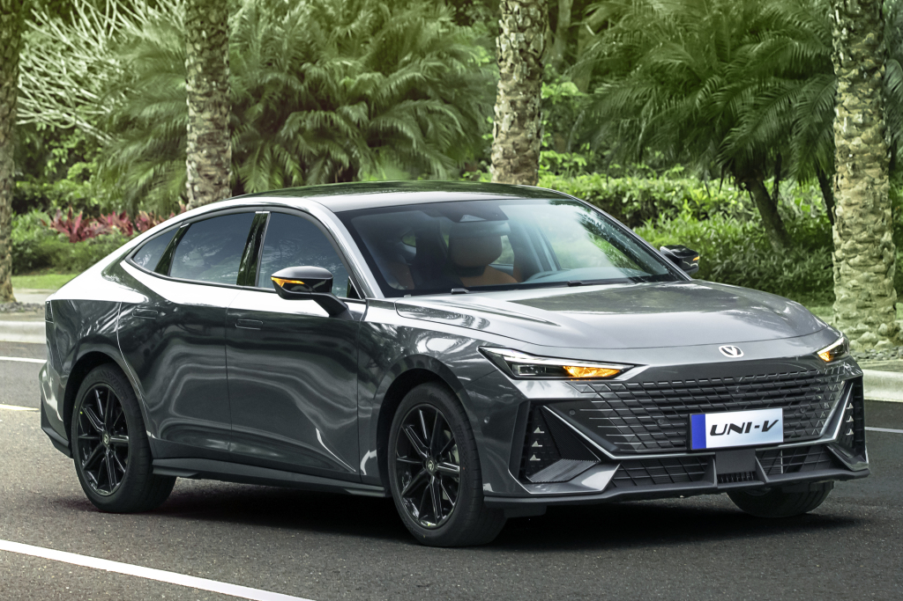

Changan Uni-V iDD

- Changan UNI-V iDD – markanın ilk plug-in hybrid (PHEV) sedan modelidir.
- 1.5 litrlik turbo mühərrik və elektrik mühərriki birlikdə 315 at gücü hasil edir.
- Yalnız elektrik rejimində 120 km məsafə qət edə bilir.
- Ümumi yanacaq sərfi çox aşağıdır – təxminən 1.5L/100km.
- 0-100 km/s sürətlənməsi təqribən 6 saniyə-dir.
- Daxili interyer tam rəqəmsal panel və futuristik dizaynla hazırlanıb.
- Elektrik və benzin rejimləri arasında keçid tam avtomatik baş verir.
- UNI-V iDD həm enerji qənaətcil, həm də idman tərzli sürüş üçün nəzərdə
tutulub.